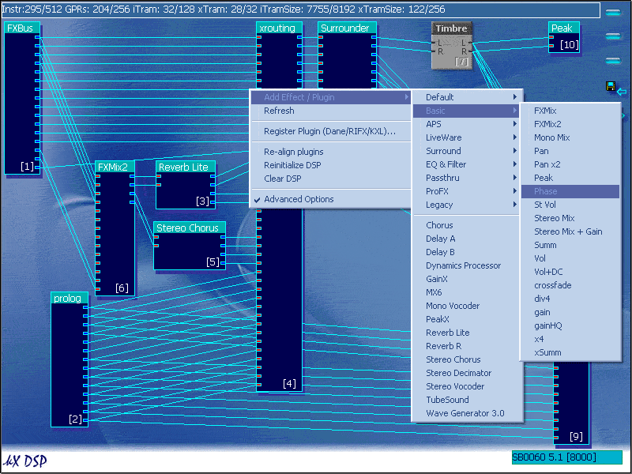
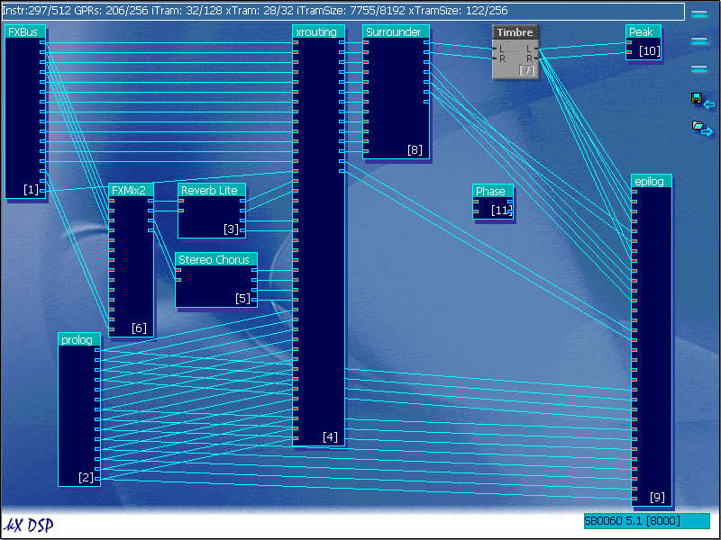
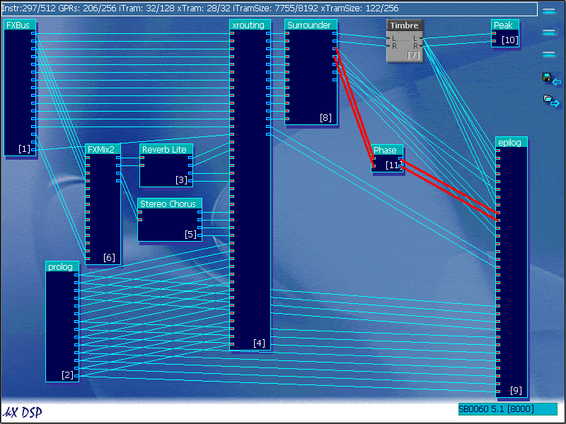
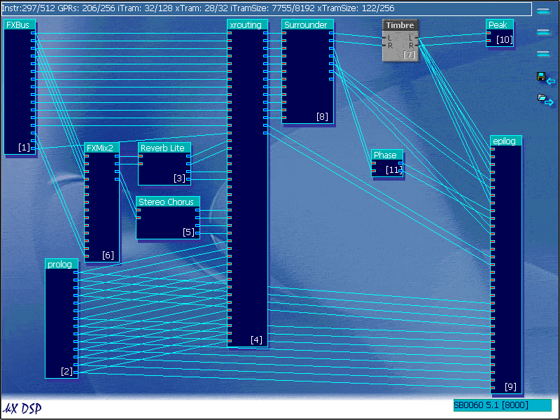

To learn the basics of DSP routing which you will need for this guide, see here.
This section of the guide will show you how to fix the reduced or "washed out" bass when using a 4.1 speaker setup, where there is a crossover in the subwoofer (sub takes low end of stereo or quadraphonic audio signal).
Note:If you use a 5.1 speaker setup, which requires 6 connections, then you do not need to read this.
Before I begin to show you how to fix the bass problem, I will first explain why it occurs.
Take a simple waveform…
…and then invert its phase
You can clearly see that these two waveforms are opposite to each other.
Now what happens when these two are added together?
You can see that the two waveforms cancel each other out, leaving silence. This is called destructive interference.
Believe it or not, but this occurs in many Soundblaster Live! and Audigy models, this is because there are two different codecs, one for the front, and one for the rear, and they are out of phase with each other.
The subwoofer takes the 4 inputs, Front and Rear Left and Right, signals, and cuts off the lower bass end, and then adds it together to create the subwoofer output.
And as the outputs are out of phase, destructive interference affects the bass sound, although this does not cause total silence, there is a great reduction occuring along the bass line, making it sound "Washed Out".
Note: Some speakers designed especially for the Live! series cards automatically invert the phase of the rear outputs, so if the bass sounds perfect, you do not need to read this.
To correct for this, we must use the DSP
To learn the basics of DSP routing which you will need for this guide,
see here.
What we need is a plugin that inverts the phase of
a signal, this plugin is called "Phase"

Add the phase plugin to the DSP

Now connect the "sL" and "sR" outputs from the Surrounder
to the inputs in the Phase module

And then connect the outputs of the Phase module to the "Analog Rear
Left" and "Analog Rear Right" connectors on the Epilog.
Make sure that if you connect "sL' to the top input
on the Phase module, that you connect the top output to "Analog Rear
Left" on the epilog.

Notice that once you connect the Phase module to the epilog, the wires that
went directly from the Surrounder to the Epilog disappear as you replace
the input.
This should now fix the bass problem with 4.1 speakers